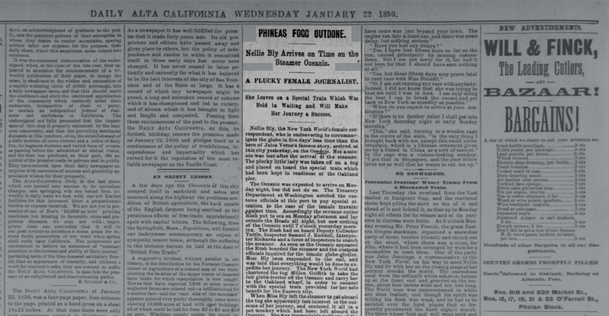
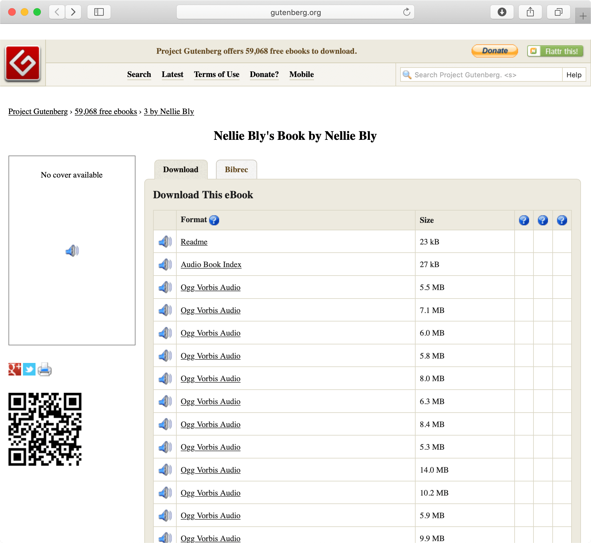

Exemplary Items

Reception of Nellie Bly at Jersey City
- Description: Digital image of print (wood engraving)
- Official title: "Around the world in seventy-two days and six hours - reception of Nellie Bly at Jersey City on the completion of her journey"
- Date: 1890
- Source: Wikimedia
- Institution: Library of Congress
Google Doodle: Nellie Bly's 151st Birthday
- Description: YouTube video about Nellie Bly for the occasion of her 151st birthday.
- Date: 2015-05-05
- Institution: Google Doodle Archive

Round the World with Nellie Bly
- Description: Boardgame which was first introduced on the front page of the New York World on the 26 January 1890: "Game board illustrating journalist Nellie Bly's circumnavigation of the globe (1889-1890)"
- Date: 1890
- Institution: New-York Historical Society
- See also: New-York Historical Society article about Nellie (.html)

Phineas Fogg Outdone: A Plucky Female Journalist.
- Description: Newspaper "Daily Alta California", Volume 82, Number 22
- Date: 1890-01-22
- Source: California Digital Newspaper Collection
- Information about the digitisation of the newspaper. (.pdf)

Around the World in Seventy-Two Days
- Description: Audio book of "Around the World in Seventy-Two Days" originially written by Nellie Bly
- Date: 2007
- Source: Wikipedia
- Institution: The Project Gutenberg
Le tour du monde en quatre-vingts jours
- Description: First edition of the book in french
- Date: 1873
- Source: Europeana
- Institution: Bibliothèque nationale de France
- See also: Wikipedia (french)

Bulletin de la Société de Géographie
- Description: Jules Vernes is mentioned in the facsimile of the bulletin on page 440. Vernes presents the society a copy of the first edition of the book.
- Date: 1873-01
- Location: Paris
- Source: Bibliothèque nationale de France
- Institution: National Library of France
- See also: Wikipedia
Soleil couchant à Ivry
- Description: Artwork depicting the second industrial revolution.
- English title: Sunset at Ivry
- Artist: Armand Guillaumin
- Date: 1873
- Source: Wikimedia
- Institution: Musée d'Orsay

Full length portrait of Nellie Bly
- Description: Portrait of Nellie Bly wearing her travelling dress.
- Date: 1890
- Source: Wikimedia
- Institution: Library of Congress